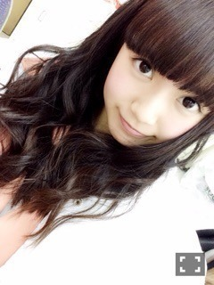
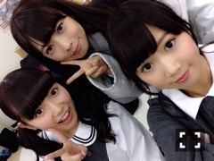
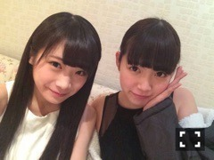
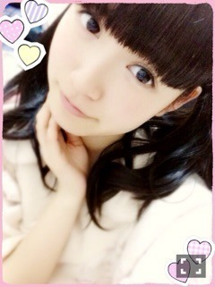
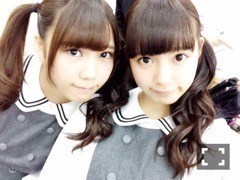
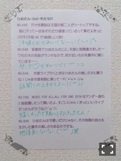

| 2015/03 21 Sat | ひめたん-OoO-その529 |
11thシングル「命は美しい」
発売になりました！
さらに、オリコンデイリーチャート
1位を獲得できました！
本当にありがとうございます( ´•̥ω•̥` )
みなさんもうお手に取って
いただいていますか？
今日はまずはじめに
アンダーMV、ペアPVについて
お話させてください♡
アンダー楽曲
「君は僕と会わない方がよかったのかな」


テーマはクラス会。
MVの中では学生時代の私と
オフィスで働くOLの私を演じています
ストーリーの展開はぜひ
見て確かめていただきたいですが
親友役のちはるがキーパーソンかな？
個人的にはこの作品で
ツインテールひめたんと
巻きおろしひめたんの
両方見ていただけるのがいいかなぁ
山田監督とは「13日の金曜日」以来
こうしてまた映像を
撮っていただきましたが
それよりもずいぶん前、1stの
陽菜ちゃんの個人PVを見たときから
素敵だなあって思っていたので
今回この楽曲で山田監督とご一緒できて
本当に嬉しかったです～＊
とにかく映像がキレイ( ´•̥ω•̥` )
演技の指導もしていただいて
私は未熟ながら楽しく撮影できました
思い入れのある大切な作品。
山田監督 ありがとうございました！
そして長野県上田市 全面協力のもと
駅や河原、商店街など
風情ある街並みで撮影できて
光栄でした！
ペアPV「スイッチ」


全く同じ役柄を2人が演じたら
どうなるのか？
比較して楽しんでもらう新しいスタイル
国民的大女優 神宮寺エリと犯人
どちらの顔も楽しんでいただけます
みなさんどちらのひめが好きですか？
真夏と私はいつも
ずっきゅん♡びーむ♡とかやってるから
シリアスな作品は新鮮かも～
他にもステキな作品が
たくさんあります！
11thシングル「命は美しい」
よろしくお願いします♡

今日は京都で全国握手会でした！
京都での全握は約1年ぶりだそう。
来てくださったみなさん
ありがとうございました( ˇωˇ )
ライブではアンダー曲を初披露。
緊張したなあ～
でも今日がスタートの日だって思うと
気合いが入りました（｀・ω・´）
これからたくさん歌う中で
どんどん自分のものにしていきたいなぁ
握手は陽菜ちゃんとペアでした！
そんバカコンビ～
陽菜ちゃんとの2人レーンは
はじめてだった( ˆoˆ )
ひなめろのみなさん
仲良くしてくださって
ありがとうございました！
きゅんきゅん王国のみなさんも
会いに来てくれてありがとう♡
握手会自体が久々のことだったので
アンダーセンターおめでとう！
高校卒業おめでとう！
西武ドーム良かったよ！
みたいな感じで
トピックがたくさんあったな～
という印象。
MV・PVの感想
今日のライブの感想
乃木どこ・のぎ天・乃木ののの感想
なんかもたくさん聞けました（＾ω＾）
このシングルではじめて
握手会来てみたよ～って方も
いらっしゃって嬉しいな♡
これからたくさんお話ししようね～＊
5日に京都行きます\( ˆoˆ )/
今度は個別です
またすぐ会えるね～でも寂しいよ～

告知！
今夜の「乃木坂46SHOW」は
乃木團が出ます！
乃木團 初のスタジオライブ
ぜひ観ていただきたいです(´｡･v･｡｀)
「One Night Carnival」歌いました！
それから、「マサカメTV」の
収録をしてきました！
実はひめたんひとりで
バラエティー番組に出演するのは
これが初めてになります♡
緊張したけれど、
共演者の皆さんに優しくしていただいて
のびのびと収録できました(灬ºωº灬)
4月18日オンエア
よろしくお願いします！

 ひめたんは広島に帰ってきたら
ひめたんは広島に帰ってきたら
まずどこに行きたい？
新しくなった広島駅を散策したい！
あとコストコとアニメイト！
ひめたんリップとかグロスとか
何使ってる～？
リップはSEPHORA
グロスはJILL STUARTだよ♡
ひめたんは寝るとき、仰向け派！？
それともうつ伏せ派！？
仰向け派ではあるんだけど
最近、抱き枕ほしいんだよね～
横向きが落ち着くのかな(っω-`｡)
ひめたんは新幹線などの
移動時間ってなにしてる人？
日記のコメント読んでることが
一番多いかな⊂( ˆoˆ )⊃
あとは日記の下書きしたり本読んだり。
音楽プレーヤーは必須です♡
ひめたんの日記の
コメント欄下２ケタに46を踏んだ方へ
手書きでコメ返するコーナー
＼ ひめたん46 ／


いつもたくさんのコメント
ありがとうございます
既にシングルの感想を
書いてくれてる人もいたので
読んでるよ～(´,,•ω•,,｀)
たくさん聴いてね♡
明日はチェキ会！
アルバムの特典イベントだよね
来てくれる人は楽しみにしてます
ポーズ考えてきてね（<・ω・>）
東京メトロのポスターの
掲示期間がそろそろ終わりに
近づいてきました
まだ見てないよ～って人は
ぜひ遊びに行ってみてね♡
(＊´・ω・＊)
コメント(956)
2015/03/21 23:30